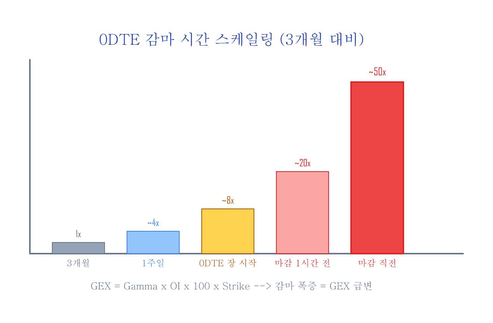
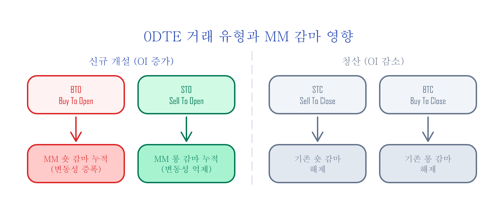
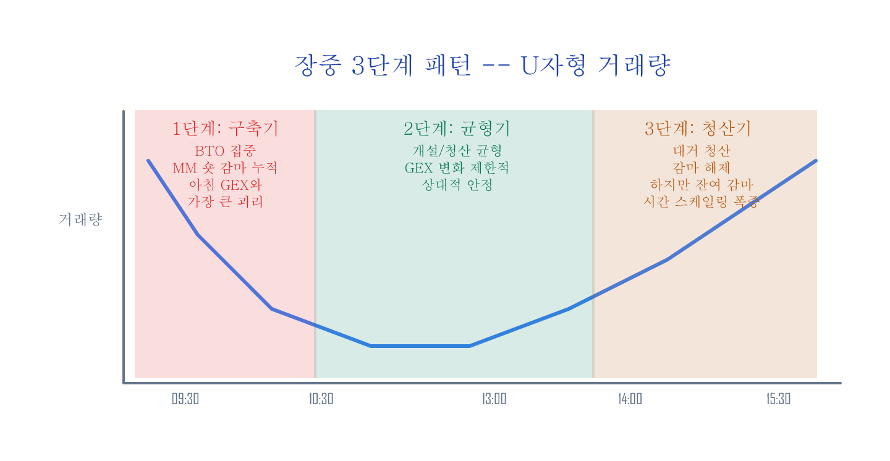

0DTE 감마 패턴 — 장중 GEX는 어떻게 변하는가¶
구글 시트: GammaExposureAndMaxPain →
0DTE Strategy Patterns탭 (직접 기록용 템플릿)
GEX 직접 계산하기에서 만든 도구는 전일 장 마감 기준 스냅샷입니다. 아침에 계산한 GEX가 -$22.4B이라고 해서 장중에도 그대로일까요?
SPX 옵션의 43~62%가 0DTE(당일 만기)입니다 (Cboe, 2023~2025). 장이 열리면 0DTE 옵션이 대량으로 개설되고 소멸됩니다. 이 거래가 시장조성자(MM: Market Maker)의 감마 포지션을 실시간으로 바꿉니다. 매일 아침 찍는 체온이 오후에는 달라질 수 있듯이, 아침에 측정한 GEX(감마 노출 — 시장 전체에 걸려 있는 감마의 총량)도 장중에 계속 바뀝니다. 아침 GEX만 보면 장중 급변동의 원인을 설명할 수 없습니다.
이 글에서는 0DTE 거래의 장중 패턴을 이해하고, 아침 GEX에 장중 보정을 적용하는 체크리스트를 만듭니다.
왜 0DTE가 GEX를 지배하는가¶
감마는 만기까지 남은 시간이 짧을수록 커집니다. 고무줄을 짧게 잡을수록 같은 힘에 더 크게 튀는 것과 비슷합니다. 직관적으로 만기가 절반으로 줄면 감마는 약 1.4배, 1/10로 줄면 약 3배로 커진다고 기억하세요 (수학적으로 1/sqrt(T)에 비례):
| 잔존 만기 | 등가격(ATM) 감마 (3개월 대비) | 근거 |
|---|---|---|
| 3개월 (63일) | 1x | 기준 |
| 1주일 (5일) | ~4x | sqrt(63/5) = 3.5 |
| 1일 | ~8x | sqrt(63/1) = 7.9 |
| 0DTE 장 시작 (6.5h 남음) | ~8x | sqrt(63/~1) |
| 0DTE 장 중반 (4h 남음) | ~10x | sqrt(63/0.6) |
| 0DTE 장 마감 1h 전 | ~20x | sqrt(63/0.15) |
| 장 마감 직전 (10min) | ~50x | sqrt(63/0.03) |
GEX = Gamma x 미결제약정(OI) x 100 x Strike이므로, 0DTE 옵션의 OI가 조금만 변해도 GEX 전체가 크게 흔들립니다. 이것이 "아침 GEX ≠ 장중 GEX"인 이유입니다.

0DTE 시장의 구조: Cboe 공식 데이터¶
Cboe가 Open-Close 데이터를 분석하여 공개한 0DTE 거래 특성입니다:
| 항목 | 수치 | 출처 |
|---|---|---|
| 0DTE 비중 (SPX 전체 대비) | 43% (2023) → 62% (2025.08) | Cboe |
| 리테일 비중 | ~50-60% | "0DTEs Decoded" (2025.05) |
| 제한적 리스크 전략 사용 | ~95% | "0DTEs Decoded" |
| Single Leg 비중 | ~45-50% | "Evolution of Same Day Options Trading" |
| 스프레드(Vertical 등) 비중 | ~50-55% | "Evolution of Same Day Options Trading" |
| 매수/매도 균형 | "remarkably balanced" | "0DTEs Decoded" |
핵심: 0DTE 거래는 대부분 개인투자자(리테일)가, 제한적 리스크 전략으로, 매수와 매도가 비교적 균형 있게 참여합니다. 하지만 장중 시간대별로 이 균형이 달라집니다 — 이것이 GEX 변화의 원인입니다.
0DTE 거래 4가지 유형¶
옵션 거래는 OI(미결제약정)에 미치는 영향에 따라 4가지로 나뉩니다.
| 거래 유형 | 뜻 | OI 영향 | MM 감마 영향 |
|---|---|---|---|
| BTO (Buy To Open) | 신규 매수 | OI 증가 | MM 매도 → 숏 감마 추가 |
| STO (Sell To Open) | 신규 매도 | OI 증가 | MM 매수 → 롱 감마 추가 |
| STC (Sell To Close) | 매수 청산 | OI 감소 | 기존 숏 감마 해제 |
| BTC (Buy To Close) | 매도 청산 | OI 감소 | 기존 롱 감마 해제 |
핵심: BTO가 많으면 MM 숏 감마(가격이 움직이는 방향으로 따라가야 하는 포지션 — 움직임을 증폭)가 누적되고, STO가 많으면 롱 감마(움직임을 완충하는 포지션)가 누적됩니다. STC/BTC는 기존 포지션을 닫으므로 감마를 해제합니다.

이 비율이 장중에 어떻게 변하는지가 GEX 보정의 열쇠입니다.
장중 3단계 패턴¶
0DTE 거래는 시장 구조에서 잘 알려진 U자형 거래량 패턴(장 시작·마감에 거래 집중, 장중 소강)을 따릅니다. 여기에 0DTE 특유의 BTO/STO 비율 변화가 결합됩니다.

1단계: 포지션 구축기 (09:30~10:00)¶
- 거래량이 하루 중 최대 (U자형의 왼쪽)
- 전일 마감 후 발생한 가격 차이(오버나이트 갭)에 대응하는 신규 매수(BTO)가 집중됨
- MM이 이 매수의 상대편을 받으면서 숏 감마 빠르게 누적
- 이 시간대에 아침 GEX 대비 가장 큰 괴리 발생
2단계: 균형기 (10:30~13:00)¶
- 거래량 감소 (U자형의 바닥)
- 아침에 열린 포지션 중 일부가 수익 실현(STC)으로 닫힘
- 신규 개설과 청산이 균형 → GEX 변화 제한적
3단계: 청산기 (14:00~15:30)¶
- 거래량 다시 증가 (U자형의 오른쪽)
- 0DTE 만기가 다가오면서 투자자들이 대거 청산 (BTC, STC 급증)
- 포지션이 닫히면서 기존 감마 해제
장 마감 전 역설
마지막 남은 사람 한 명이 빈 극장에서 박수를 치면, 소수여도 엄청나게 크게 울립니다. 포지션은 닫히는데(OI 감소), 남은 포지션의 감마는 극대화됩니다. 예를 들어, 100계약 x 0.05 감마 = 5이지만, 장 마감 직전 20계약 x 0.50 감마 = 10으로, 계약 수가 줄었는데 총 영향은 오히려 커집니다. 특히 ATM 근처에 남아있는 소수의 계약은 계약당 감마가 폭증하여, OI x Gamma의 곱이 줄어들지 않을 수 있습니다. 깊은 OTM 포지션은 감마가 거의 0이므로 이 효과는 ATM 근처에 OI가 집중된 경우에 강하게 나타납니다.
아침 GEX + 장중 보정: 체크리스트¶
장 시작 전 (아침 GEX 확인)¶
- [ ] GEX 직접 계산하기로 Total GEX 부호 확인
- [ ] 플립 포인트 대비 현재가 위치 확인
- [ ] Max Pain 확인
장 시작 30분 (09:30~10:00)¶
- [ ] 0DTE 거래량이 평소보다 높은가? (구축기의 강도)
- [ ] 콜/풋 중 어느 쪽에 매수가 집중되는가?
- [ ] 아침 GEX가 이미 숏 감마면 → 변동성 확대 경고
장중 (10:00~14:00)¶
- [ ] Volume이 감소하고 안정되면 GEX 변화 제한적
- [ ] Volume이 감소하지 않고 계속 높으면 → 비정상, 주의
장 마감 전 (14:00~16:00)¶
- [ ] 대량 청산이 시작되면 기존 감마 해제
- [ ] 하지만 감마 스케일링(시간 감쇠)으로 잔여 포지션의 영향 증폭
- [ ] 이 시간대에 아침 GEX만 보고 판단하면 오판 위험
경고 신호 정리¶
| 신호 | 의미 | 대응 |
|---|---|---|
| 아침 숏 감마 + 09:30 거래량 급증 | 숏 감마 심화 가능 | 변동성 확대 대비 |
| 15:00 이후 대량 청산 | 감마 해제 | 급변동 후 안정화 가능 |
| 아침 롱 감마 + 장중 안정적 | 롱 감마 유지 | 변동성 억제, 안정적 |
| 장중 Volume이 U자 바닥에서 급증 | 예상 밖 이벤트 | 감마 구조 변화 가능, 주의 |
직접 관찰하는 법¶
장중 0DTE 패턴을 추적하려면 BTO/STO 구분이 필요한데, 이것은 공개 데이터만으로는 정확히 알 수 없습니다. Cboe의 Open-Close 데이터(유료)가 유일한 공식 소스입니다.
하지만 무료로 근사치를 관찰할 수 있는 방법이 있습니다:
방법 1: 브로커 옵션 체인 관찰 (수동)¶
대부분의 브로커(TOS, IBKR 등)에서 옵션 체인의 Volume을 실시간으로 볼 수 있습니다.
- 30분 간격으로 0DTE ATM 부근 행사가의 Volume 스냅샷 기록
- Volume 증가분의 방향은 체결 데이터(Time & Sales)에서 추정:
- Ask 이상 체결 = 매수 주도 (BTO 가능성 높음)
- Bid 이하 체결 = 매도 주도 (STO 가능성 높음)
- 주의: 이 방법은 근사치입니다 — Ask 이상 체결이라도 STC(기존 롱 청산)일 수 있어 BTO와 정확히 구분할 수 없습니다
- OI 변화는 다음 날 확인 (장중에는 갱신되지 않음)
구글 시트의 0DTE Strategy Patterns 탭을 템플릿으로 사용하여, 관찰한 데이터를 기록하고 패턴을 쌓아갈 수 있습니다.
방법 2: Python Volume 스냅샷¶
Cboe CSV를 장중에 수동으로 여러 번 받아서 Volume 변화를 추적합니다. (Cboe delayed quotes는 15분 지연이며, 자동 스크래핑은 이용약관상 금지됩니다.)
Python: 0DTE Volume 스냅샷 코드
import pandas as pd
from datetime import datetime
def snapshot_volume(filepath, timestamp):
"""Cboe CSV에서 0DTE ATM 근처 Volume 스냅샷."""
df = pd.read_csv(filepath, skiprows=3)
df.columns = [
'expiry', 'call_symbol', 'call_last', 'call_net', 'call_bid', 'call_ask',
'call_volume', 'call_iv', 'call_delta', 'call_gamma', 'call_oi',
'strike',
'put_symbol', 'put_last', 'put_net', 'put_bid', 'put_ask',
'put_volume', 'put_iv', 'put_delta', 'put_gamma', 'put_oi'
]
for col in ['strike', 'call_volume', 'put_volume']:
df[col] = pd.to_numeric(df[col], errors='coerce')
# 오늘 만기만 필터 (0DTE)
# Cboe 형식: "Fri Jun 13 2025" — 요일 제외하고 월/일/년으로 매칭
today = datetime.now().strftime('%b %d %Y') # e.g., "Jun 13 2025"
dte0 = df[df['expiry'].astype(str).str.contains(today, na=False)]
summary = dte0.agg({
'call_volume': 'sum',
'put_volume': 'sum'
})
summary['timestamp'] = timestamp
summary['total'] = summary['call_volume'] + summary['put_volume']
summary['put_call_ratio'] = summary['put_volume'] / max(summary['call_volume'], 1)
return summary
# 30분 간격으로 실행
snap = snapshot_volume('spx_options_1000.csv', '10:00')
print(snap)
이 코드는 총 Volume과 Put/Call Ratio만 캡처합니다. BTO/STO 구분은 불가능하지만, "콜이 급증하는지 풋이 급증하는지"는 파악할 수 있습니다. 여러 시점의 스냅샷을 비교하면 Volume 증가 속도와 방향을 추정할 수 있습니다.
정리¶
| 아침 GEX만 볼 때 | 장중 패턴까지 볼 때 | |
|---|---|---|
| 정보 | 전일 마감 스냅샷 | 장중 변화 방향 |
| 빈 구간 | 장중 전체 | 없음 |
| 장 마감 전 급변동 | "왜?" | "0DTE 감마 구조 + 시간 스케일링" |
| 판단 근거 | Total GEX 부호만 | 부호 + 장중 이동 방향 |
핵심¶
- 아침 GEX는 출발점이지 정답이 아닙니다.
- 장 시작 30분의 거래량과 방향이 당일 감마 변화의 가장 강한 신호입니다.
- 장 마감 전 30분은 OI가 줄어도 감마가 폭증합니다. 숫자가 아닌 구조를 보세요.
- 두 도구를 결합하면: 아침 스냅샷 + 장중 관찰 = 더 나은 추정
이 도구들은 단기 트레이딩용이 아닙니다. 장기 투자자가 장중 급변동을 보고 "왜?"라는 질문에 구조적으로 답할 수 있게 해주는 이해의 도구입니다. 원인을 알면 공포에 팔지 않습니다.
참고¶
- GEX 직접 계산하기 — Google Sheets + Python
- Cboe SPX Options — Delayed Quotes
- Cboe "0DTEs Decoded" (2025.05)
- Cboe "The Evolution of Same Day Options Trading"
- SqueezeMetrics GEX 백서 (PDF)
Cboe, SPX, VIX는 Cboe Exchange, Inc.의 등록 상표입니다. 이 글은 Cboe와 제휴 또는 보증 관계가 없습니다.
이전 글: GEX 직접 계산하기 — Google Sheets + Python | 다음 글: 변동성 대시보드 — Correlation + Skew 추적